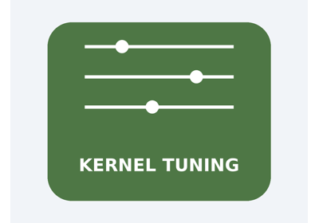

Note
Go to the end to download the full example code.
Inspect, change, and calibrate kernel tuning from Python#
This example uses onnx_light.kernel_tuning to discover every tuning
parameter used by one exact kernel, compare its portable and local values,
write a validated local profile, and run a bounded calibration.
The example writes only to a temporary cache. Real applications may omit
path to use default_kernel_tuning_cache_path().
from __future__ import annotations
import tempfile
from pathlib import Path
from pprint import pprint
import numpy as np
from onnx_light import kernel_tuning
from onnx_light.onnx import TensorProto
from onnx_light.onnx_lib import parser
from onnx_light.onnx_py import _onnxpykernels
runtime = _onnxpykernels.runtime
Discover the parameters and defaults#
A tuning schema is registered for every exact combination of library,
implementation, element type, device, and tuning ABI. Abs uses one
parallel crossover threshold.
element_type = int(TensorProto.FLOAT)
initial = kernel_tuning.kernel_tuning_parameters(kernel="Abs", element_type=element_type)
(abs_parameters,) = initial["kernels"]
print(f"default cache: {initial['cache_path']}")
pprint(abs_parameters)
default cache: /home/runner/.cache/onnx-light/kernel_tuning.cache
{'active_source': 'portable_default',
'active_values': {'parallel.minimum_elements': 32768},
'cached_values': None,
'calibratable': True,
'defaults': {'parallel.minimum_elements': 32768},
'device': -1,
'device_name': 'CPU',
'element_type': 1,
'implementation': 'portable',
'kernel': 'Abs',
'library': 'onnx_light',
'parameter_names': ['parallel.minimum_elements'],
'tuning_abi': 2}
Propose missing profiles#
A proposal is read-only. It compares the requested exact keys with the local cache and separates keys that can be calibrated automatically from those without callbacks.
temporary = tempfile.TemporaryDirectory()
missing_cache = Path(temporary.name) / "missing_tuning.cache"
proposal = kernel_tuning.propose_kernel_tuning_updates(
kernels=["Abs"], element_types=[element_type], path=str(missing_cache)
)
assert len(proposal["calibratable"]) == 1
print("proposed calibrations:")
pprint(proposal["calibratable"])
proposed calibrations:
[{'active_source': 'portable_default',
'active_values': {'parallel.minimum_elements': 32768},
'cached_values': None,
'calibratable': True,
'defaults': {'parallel.minimum_elements': 32768},
'device': -1,
'device_name': 'CPU',
'element_type': 1,
'implementation': 'portable',
'kernel': 'Abs',
'library': 'onnx_light',
'parameter_names': ['parallel.minimum_elements'],
'tuning_abi': 2}]
Write a validated profile#
set_kernel_tuning_parameters accepts a partial dictionary. It fills
omitted names from an existing matching cache profile or the portable
defaults, validates the complete set, persists it atomically, and loads it
into the current process by default.
cache_path = Path(temporary.name) / "kernel_tuning.cache"
portable_minimum = abs_parameters["defaults"]["parallel.minimum_elements"]
chosen_minimum = max(1, portable_minimum // 2)
update = kernel_tuning.set_kernel_tuning_parameters(
"Abs", element_type, {"parallel.minimum_elements": chosen_minimum}, path=str(cache_path)
)
assert update["status"] == "updated", update["diagnostics"]
print("updated profile:")
pprint(update)
updated profile:
{'diagnostics': [],
'load': {'diagnostics': [],
'incompatible': [],
'invalid': [],
'loaded': [{'device': -1,
'device_name': 'CPU',
'element_type': 1,
'implementation': 'portable',
'kernel': 'Abs',
'library': 'onnx_light',
'tuning_abi': 2}],
'missing': [],
'path': '/tmp/tmpvhs8o13o/kernel_tuning.cache',
'published_generation': 297,
'stale': [],
'status': 'loaded'},
'path': '/tmp/tmpvhs8o13o/kernel_tuning.cache',
'preserved': [],
'pruned': [],
'status': 'updated',
'updated': [{'device': -1,
'device_name': 'CPU',
'element_type': 1,
'implementation': 'portable',
'kernel': 'Abs',
'library': 'onnx_light',
'tuning_abi': 2}],
'values': {'parallel.minimum_elements': 16384}}
Compare cache and active values#
Inspection reads every persisted profile without changing the registry.
kernel_tuning_parameters separately reports the matching local cache
values and the values currently published in this process.
inspection = kernel_tuning.inspect_kernel_tuning_cache(str(cache_path))
assert inspection["status"] == "loaded"
assert inspection["profiles"][0]["local"]
print("cache profiles:")
pprint(inspection["profiles"])
current = kernel_tuning.kernel_tuning_parameters(
kernel="Abs", element_type=element_type, path=str(cache_path)
)
(abs_tuning,) = current["kernels"]
assert abs_tuning["cached_values"]["parallel.minimum_elements"] == chosen_minimum
assert abs_tuning["active_values"]["parallel.minimum_elements"] == chosen_minimum
print("active source:", abs_tuning["active_source"])
cache profiles:
[{'architecture': 'x86_64',
'device': -1,
'device_name': 'CPU',
'effective_threads': 2,
'element_type': 1,
'implementation': 'portable',
'kernel': 'Abs',
'library': 'onnx_light',
'local': True,
'microarchitecture': '',
'tuning_abi': 2,
'values': {'parallel.minimum_elements': 16384},
'vendor': 'amd'}]
active source: published_profile
Use the active value#
A session created after the profile is loaded resolves it once and copies the
typed value into its Abs kernel. Steady-state calls do not read the cache
or registry again. The output cannot reveal which threshold was used, because
serial and parallel execution have identical semantics. A parallel-region
collector makes the difference observable.
model = parser.parse_model(
'<ir_version: 10, opset_import: ["" : 18]>'
"agraph (float[N] x) => (float[N] y) { y = Abs(x) }"
)
probe_elements = max(2, chosen_minimum * 2)
x = -np.ones(probe_elements, dtype=np.float32)
tensor_proto = TensorProto()
tensor_proto.name = "x"
tensor_proto.dims.append(probe_elements)
tensor_proto.data_type = element_type
tensor_proto.raw_data = x.tobytes()
def make_profiled_session():
"""Creates an uninitialized two-thread session and its runtime context."""
collector = runtime.ParallelRegionCollector(capacity=4)
options = runtime.RuntimeSessionOptions(
parameters=runtime.RuntimeParameters(2), parallel_region_collector=collector
)
context = runtime.RuntimeContext(runtime.KernelContext(runtime.default_opset(18)))
context.set("x", runtime.tensor_from_proto(tensor_proto))
return runtime.RuntimeSession(model, options), context
# Tuning profiles include the effective thread count, so ``num_threads=2``
# matches the sessions below. First force this exact input below the active
# crossover. The first run initializes the kernel and copies
# ``probe_elements + 1`` into the session.
kernel_tuning.set_kernel_tuning_parameters(
"Abs",
element_type,
{"parallel.minimum_elements": probe_elements + 1},
path=str(cache_path),
num_threads=2,
)
serial_session, serial_context = make_profiled_session()
serial_session.run(serial_context)
serial_events = serial_session.parallel_region_report().events
assert len(serial_events) == 1
assert serial_events[0].admitted_threads == 1
# Restore the chosen value. The initialized session remains serial because it
# does not consult the registry again, while a new session copies the new
# threshold and enters ParallelFor for the same input.
kernel_tuning.set_kernel_tuning_parameters(
"Abs",
element_type,
{"parallel.minimum_elements": chosen_minimum},
path=str(cache_path),
num_threads=2,
)
serial_session.run(serial_context)
serial_events = serial_session.parallel_region_report().events
assert len(serial_events) == 2
assert all(event.admitted_threads == 1 for event in serial_events)
tuned_session, tuned_context = make_profiled_session()
tuned_session.run(tuned_context)
tuned_events = tuned_session.parallel_region_report().events
assert len(tuned_events) == 1
assert tuned_events[0].requested_threads == 2
assert tuned_events[0].admitted_threads == 2
y = runtime.tensor_to_numpy(tuned_context.get("y")).view(np.float32)
np.testing.assert_array_equal(y, np.abs(x))
print(
f"same {probe_elements}-element input: old session admitted "
f"{serial_events[-1].admitted_threads} participant, new session admitted "
f"{tuned_events[0].admitted_threads}"
)
same 32768-element input: old session admitted 1 participant, new session admitted 2
Calibrate the kernel#
Calibration compares deterministic candidate runs with the forced serial
implementation, validates every output, and searches for a stable crossover.
save=False publishes the result only in this process. Set save=True
(the default) to merge it into the selected cache.
calibration = kernel_tuning.calibrate_kernel_tuning(
"Abs",
element_types=[element_type],
maximum_duration_ms=100,
maximum_memory_bytes=16 << 20,
save=False,
)
assert len(calibration["calibrated"]) == 1
print("calibrated profile:")
pprint(calibration["calibrated"][0])
print("diagnostics:")
pprint(calibration["diagnostics"])
temporary.cleanup()
calibrated profile:
{'device': -1,
'device_name': 'CPU',
'element_type': 1,
'implementation': 'portable',
'kernel': 'Abs',
'library': 'onnx_light',
'tuning_abi': 2,
'values': {'parallel.minimum_elements': 8192}}
diagnostics:
[{'device': -1,
'device_name': 'CPU',
'element_type': 1,
'implementation': 'portable',
'kernel': 'Abs',
'library': 'onnx_light',
'message': 'Abs selected parallel.minimum_elements=8192.',
'tuning_abi': 2}]
Total running time of the script: (0 minutes 0.016 seconds)
Related examples

Inspect, change, and calibrate kernel tuning from Python
Gallery generated by Sphinx-Gallery
Example last updated
- Date:
2026-08-31